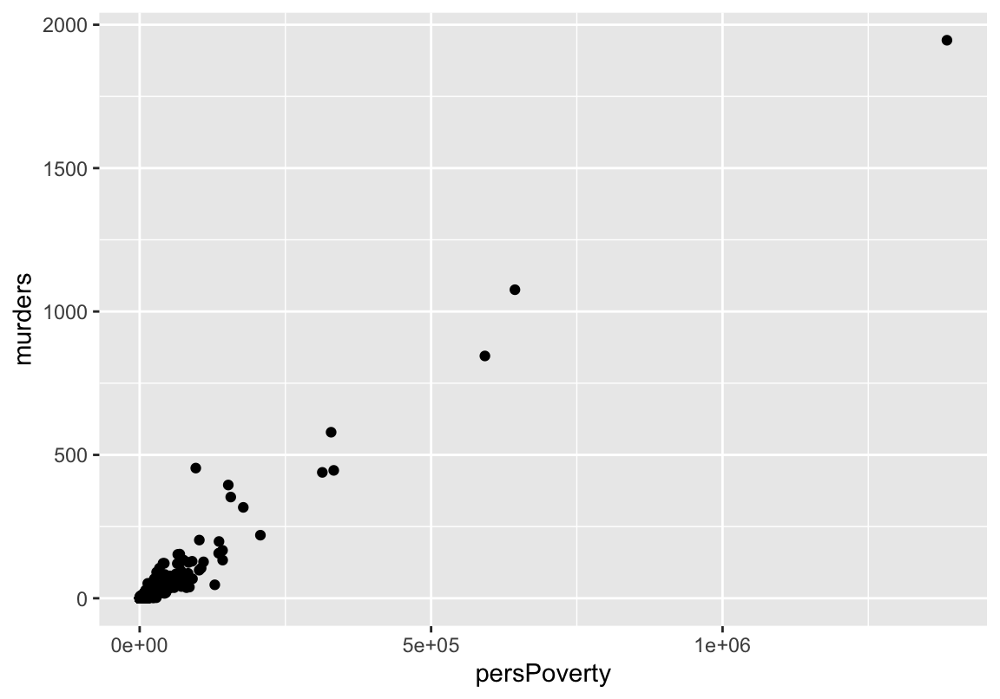
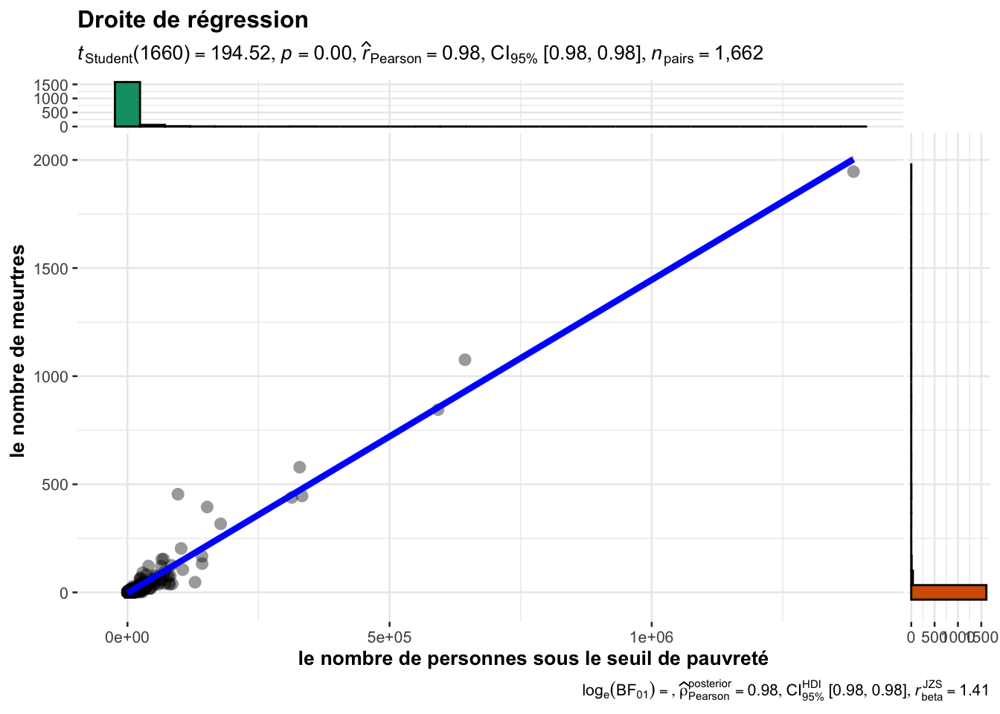
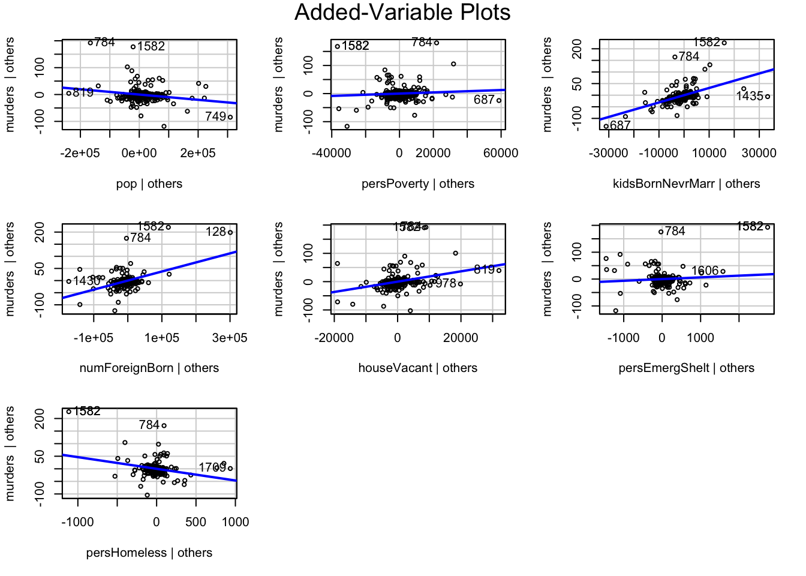

1 Régression linéaire
1.1 Introduction
La régression lineaire est une méthode statistique qui permet de trouver une relation lineaire entre des variables quantitives, une à expliquer et d’autres explicatives. C’est en fait un ajustement affine de la forme :
\[\begin{equation} y_i = \beta_0 + \beta_1x_{i1} + \beta_2x_{i2} +\dots+\beta_px_{ip}+\epsilon_{i}\;\; \end{equation}\]\[i\in\{1,2,3\dots,n\}\]
- \(y_i\) représentent la \(i\)ème valeur de la variable dépendantes \(y\).
- \(x_{ij}\) représente la mesure de la \(i\)ème observation de la variable explicative \(X_j\)
- les \(\beta_j\) sont les paramètres inconnus du modèle à estimer
- \(\epsilon_i\) représente le bruit associé à la \(i\)ème observation
L’équation précédente peut être écrite sous une forme matricielle de cette manière :
avec :
Commençons par importer le jeu de données que nous nommerons \(dfcom\):
Communities = read.csv("data/Communities.csv",row.names = 1)| communityname | State | countyCode | communityCode | fold | pop | perHoush | pctBlack | pctWhite | pctAsian | pctHisp | pct12.21 | pct12.29 | pct16.24 | pct65up |
|---|---|---|---|---|---|---|---|---|---|---|---|---|---|---|
| BerkeleyHeightstownship | NJ | 39 | 5320 | 1 | 11980 | 3.10 | 1.37 | 91.78 | 6.50 | 1.88 | 12.47 | 21.44 | 10.93 | 11.33 |
| Marpletownship | PA | 45 | 47616 | 1 | 23123 | 2.82 | 0.80 | 95.57 | 3.44 | 0.85 | 11.01 | 21.30 | 10.48 | 17.18 |
| Tigardcity | OR | ? | ? | 1 | 29344 | 2.43 | 0.74 | 94.33 | 3.43 | 2.35 | 11.36 | 25.88 | 11.01 | 10.28 |
| Gloversvillecity | NY | 35 | 29443 | 1 | 16656 | 2.40 | 1.70 | 97.35 | 0.50 | 0.70 | 12.55 | 25.20 | 12.19 | 17.57 |
| Bemidjicity | MN | 7 | 5068 | 1 | 11245 | 2.76 | 0.53 | 89.16 | 1.17 | 0.52 | 24.46 | 40.53 | 28.69 | 12.65 |
| Springfieldcity | MO | ? | ? | 1 | 140494 | 2.45 | 2.51 | 95.65 | 0.90 | 0.95 | 18.09 | 32.89 | 20.04 | 13.26 |
| Norwoodtown | MA | 21 | 50250 | 1 | 28700 | 2.60 | 1.60 | 96.57 | 1.47 | 1.10 | 11.17 | 27.41 | 12.76 | 14.42 |
| Andersoncity | IN | ? | ? | 1 | 59459 | 2.45 | 14.20 | 84.87 | 0.40 | 0.63 | 15.31 | 27.93 | 14.78 | 14.60 |
| Fargocity | ND | 17 | 25700 | 1 | 74111 | 2.46 | 0.35 | 97.11 | 1.25 | 0.73 | 16.64 | 35.16 | 20.33 | 8.58 |
| Wacocity | TX | ? | ? | 1 | 103590 | 2.62 | 23.14 | 67.60 | 0.92 | 16.35 | 19.88 | 34.55 | 21.62 | 13.12 |
1.2 Application de la régression linéaire simple
Corrélation
Comme nous l’avons mentionner dans l’introduction, le but de se projet est d’expliquer de différentes manières les meurtes aux USA. Par conséquent, on peut choisir comme variable dépendante, les crimes(murders) et chercher les variables explicatives. Dans le cas de le régression linéaire simple il doit exister une corrélation assez importante entre la variable \(y\)(muders) et \(X\) que nous recherchons actuellement. Donc commençons par filtrer les fortes corrélation avec la variable \(y\) dans notre jeu de données.
# Correlation matrix
corCom = correlation::correlation(Communities)
# Filtered correlation, bound =0.8
corCom[(corCom$r>0.8) & corCom$Parameter2=='murders',]## # Correlation Matrix (pearson-method)
##
## Parameter1 | Parameter2 | r | 95% CI | t(2213) | p
## -------------------------------------------------------------------------
## pop | murders | 0.96 | [0.96, 0.96] | 159.80 | < .001***
## persUrban | murders | 0.96 | [0.95, 0.96] | 156.13 | < .001***
## persPoverty | murders | 0.98 | [0.97, 0.98] | 211.42 | < .001***
## kidsBornNevrMarr | murders | 0.98 | [0.98, 0.98] | 221.27 | < .001***
## numForeignBorn | murders | 0.89 | [0.88, 0.90] | 92.94 | < .001***
## houseVacant | murders | 0.90 | [0.89, 0.90] | 95.29 | < .001***
## persEmergShelt | murders | 0.89 | [0.88, 0.90] | 93.14 | < .001***
## persHomeless | murders | 0.85 | [0.84, 0.86] | 76.49 | < .001***
##
## p-value adjustment method: Holm (1979)
## Observations: 2215Nuage de points
Le tableau précédent indique les variables fortement corrélées avec notre \(output\) murders. Prenons l’exemple de la variable persPoverty qui représente le nombre de personnes sous le seuil de pauvreté.
library(ggplot2)
fig = ggplot(data = Communities,aes(x=persPoverty,y=murders))+
geom_point()
fig
Entraînement de modèle & Droite de régression
La figure précédente laisse parraître qu’il pourrait effectivement exister une relation linéaire entre murders et persPoverty. Appliquons la fonction lm() pour voir ce qu’il en est vraiment ! Pour faire une analyse des résidus pltard, nous n’entrainerons que \(75\%\) du jeu de données et le reste servira à la prédiction.
library(dplyr)
# Train_Test_Splite
set.seed(1345)
# Pourcentage de donnees correspondant a 25%
per = dim(Communities)[1]%/%4
echantillon <- sample(1:dim(Communities)[1]) %>% .[1:per]
lmDataTrain = Communities[-echantillon,c("murders","persPoverty")]
lmDataTest = Communities[echantillon,c("murders","persPoverty")]#Model Training
lmSimple <- lm(murders~persPoverty,data = lmDataTrain)
summary(lmSimple)##
## Call:
## lm(formula = murders ~ persPoverty, data = lmDataTrain)
##
## Residuals:
## Min 1Q Median 3Q Max
## -136.43 -1.13 1.32 2.52 317.80
##
## Coefficients:
## Estimate Std. Error t value Pr(>|t|)
## (Intercept) -3.271e+00 3.340e-01 -9.796 <2e-16 ***
## persPoverty 1.449e-03 7.447e-06 194.519 <2e-16 ***
## ---
## Signif. codes: 0 '***' 0.001 '**' 0.01 '*' 0.05 '.' 0.1 ' ' 1
##
## Residual standard error: 13.4 on 1660 degrees of freedom
## Multiple R-squared: 0.958, Adjusted R-squared: 0.9579
## F-statistic: 3.784e+04 on 1 and 1660 DF, p-value: < 2.2e-16La sortie de la fonction summary() indique des \(p-values\) très inférieures à \(5\%\), donc on rejette l’hypothèse de nullité des \(\beta\). On peut aussi constater que le coefficient de détermination \(R^2\) vaut \(0.958\) ce qui signifie que notre modèle a un score de \(95.8\%\). Ce dernier reflète une bonne qualité du modèle.
ggstatsplot::ggscatterstats(
data = lmDataTrain,
x = persPoverty,
y = murders,
xlab = "le nombre de personnes sous le seuil de pauvreté",
ylab = "le nombre de meurtres",
title = "Droite de régression",
messages = FALSE
)## Registered S3 method overwritten by 'ggside':
## method from
## +.gg ggplot2## `stat_bin()` using `bins = 30`. Pick better value with `binwidth`.
## `stat_bin()` using `bins = 30`. Pick better value with `binwidth`.
Prédiction
A présent, nous pouvons utiliser notre échantillon non entrainé de données pour prédire à partir de notre model, quel aurait était le nombre de meurtres pour chauque \(x_i\).
X_test=as.data.frame(lmDataTest[["persPoverty"]])
colnames(X_test)="persPoverty"
y_predict = predict(object = lmSimple,X_test)Graphes des résidus
On peut représenter le graphe des \(\hat y\) prédits et des \(y\). Pour un modèle parfait, le nuage de point doit être sur la première bissectrice.
ggplot(data =lmDataTest) +
geom_point(aes(persPoverty,murders),color = 'darkgreen',
size =2,shape=22,fill ="darkgreen") +
geom_point(aes(x = persPoverty, y =y_predict), color ='blue') +
geom_segment(aes(x =persPoverty ,
y = murders, xend = persPoverty, yend = y_predict),
color = 'red')Figure 1.1: Les segments en rouges représentent les résidus, les carrés verts les y non entrainés qui ont servi au test et les points bleus représentent les y prédits à partir de notre modèle.
On peut aussi visualiser la répartition des résidus du modèle lmSimple autour de leur moyenne \(0\).
plot(lmSimple$residuals)Figure 1.2: On constate une répartition des résidus autour de 0
1.3 Application de la régression linéaire multiple
Dans cette partie on peut s’intéresser à la relation entre le nombre de meurtres et plusieurs autres variables. Un modèle de régression linéaire multiple pourrait faire l’affaire. Comme dans le cas de la régression linéaire simple, on va commencer par étudier la corrélation entre les variables explicatives. Nous allons choisir dans notre exemple, les variables qui sont corrélées avec murders comme varioles indépendantes.
Ces dernières ne doivent pas être parfaitement corrélées entre elles. En effet dans la solution estimée du coefficient \(\beta\), on devra inversé la matrice X des variables explicatives. De ce fait une corrélation impliquera que la matrice ne soit pas de rang plein, donc non inversible.
\[\hat\beta = (X'X)^{-1}(X'y)\]
Commençons par selectionner nos variables pour la régression linéaire multiple.
library(dplyr)
lmMultpleDF = Communities %>% select(murders,pop, persUrban, persPoverty,
kidsBornNevrMarr, numForeignBorn,
houseVacant, persEmergShelt, persHomeless)Entraînement de modèle
Le langage R permet d’entraîner le modèle linéaire multiple grâce à la fonction lm(). Pour indiquer à la fonction que nous sommes dans le cas d’une régression multiple, l’argument formula() doit recevoir y~X1+X2+...+XP et pour notre exemple murders~pop+persUrban+....
Lors qu’on précise l’argument data de la fonction lm et que les données ne contiennent que les variables à étudier, l’argument formula peut dans ce cas recevoir juste y~.. En Pratique, pour notre jeu de données lmMultpleDF, voici le code approprié :
# train test split
lmMultiple_Test = lmMultpleDF[echantillon,]
lmMultiple_Train = lmMultpleDF[-echantillon,]
# Model training
lmMultiple = lm(formula = murders~.,data = lmMultiple_Train)
summary(lmMultiple)##
## Call:
## lm(formula = murders ~ ., data = lmMultiple_Train)
##
## Residuals:
## Min 1Q Median 3Q Max
## -109.924 -1.099 0.412 1.206 175.748
##
## Coefficients:
## Estimate Std. Error t value Pr(>|t|)
## (Intercept) -4.318e-01 3.698e-01 -1.168 0.243166
## pop -1.096e-04 3.312e-05 -3.310 0.000953 ***
## persUrban 1.071e-05 2.910e-05 0.368 0.713030
## persPoverty 2.131e-04 6.680e-05 3.190 0.001452 **
## kidsBornNevrMarr 3.119e-03 1.196e-04 26.080 < 2e-16 ***
## numForeignBorn 3.743e-04 1.809e-05 20.695 < 2e-16 ***
## houseVacant 1.824e-03 1.338e-04 13.629 < 2e-16 ***
## persEmergShelt 6.397e-03 1.853e-03 3.452 0.000571 ***
## persHomeless -4.637e-02 4.110e-03 -11.282 < 2e-16 ***
## ---
## Signif. codes: 0 '***' 0.001 '**' 0.01 '*' 0.05 '.' 0.1 ' ' 1
##
## Residual standard error: 10.41 on 1653 degrees of freedom
## Multiple R-squared: 0.9747, Adjusted R-squared: 0.9746
## F-statistic: 7972 on 8 and 1653 DF, p-value: < 2.2e-16La sortie de la fonction summary() indique qu’on peut se passer de la variable persUrban dans l’explication de murders par un modèle linéaire. En effet, son coefficient \(\beta\) pourrait être nul car les \(p-values\) est supérieure à \(\alpha=5\%\).
library(dplyr)
## Train test split
lmMultpleDF = lmMultpleDF %>% select(-persUrban)
lmMultiple_Test = lmMultpleDF[echantillon,]
lmMultiple_Train = lmMultpleDF[-echantillon,]
# Model training
lmMultiple = lm(formula = murders~.,data = lmMultiple_Train)
summary(lmMultiple)##
## Call:
## lm(formula = murders ~ ., data = lmMultiple_Train)
##
## Residuals:
## Min 1Q Median 3Q Max
## -110.080 -1.137 0.422 1.222 175.907
##
## Coefficients:
## Estimate Std. Error t value Pr(>|t|)
## (Intercept) -5.027e-01 3.155e-01 -1.593 0.111255
## pop -9.813e-05 1.092e-05 -8.983 < 2e-16 ***
## persPoverty 2.098e-04 6.619e-05 3.170 0.001555 **
## kidsBornNevrMarr 3.122e-03 1.194e-04 26.150 < 2e-16 ***
## numForeignBorn 3.739e-04 1.804e-05 20.720 < 2e-16 ***
## houseVacant 1.822e-03 1.337e-04 13.630 < 2e-16 ***
## persEmergShelt 6.371e-03 1.851e-03 3.441 0.000593 ***
## persHomeless -4.644e-02 4.105e-03 -11.312 < 2e-16 ***
## ---
## Signif. codes: 0 '***' 0.001 '**' 0.01 '*' 0.05 '.' 0.1 ' ' 1
##
## Residual standard error: 10.41 on 1654 degrees of freedom
## Multiple R-squared: 0.9747, Adjusted R-squared: 0.9746
## F-statistic: 9116 on 7 and 1654 DF, p-value: < 2.2e-16De plus, le coefficient d’ajustement \(R^2\) est de \(0.9747\), soit un score de \(97.47\%\) pour notre modèle ce qui est un très bon résultat.
Graphes de régression
Lorsque le nombre de variables explicatives dépasse \(2\), il est impossible de représenter sur un même graphes le nuage de points formé par y. En effet la dimension physique maximale est de 3.
Il existe plusieurs packages qui donnent des représentations assez significatives en deux dimensions du modèle linéaire multiple tel que car2.
La représentation de la droite de régression peut se faire sur chaque dimension des variables explicatives grâce à la fonction avPlots() de la librairie car.
library(car)
avPlots(lmMultiple)
Prédiction
La prédiction dans le modèle linéaire multiple se fait aussi avec la fonction predict() comme dans le cas simple. On va utiliser notre modèle déjà entraîné avec \(75\%\) de notre jeu de données lmMultpleDF et les \(20\%\) pour effectuer une prédiction. Cela peut nous permettre de voir les résidus entre les valeurs prédites et les valeurs réelles de \(y\).
y_hat = predict(lmMultiple,lmMultiple_Test[,-1])
head(y_hat,10)## 2037 174 210 683 821 519 1593
## 0.2445685 19.3517750 1.4280286 5.4097354 7.8093372 0.8155394 -1.6654378
## 1098 1266 1153
## 1.5812592 -1.1213912 -0.76493631.3.1 Graphe des résidus
On peut visualiser les résidus entre les variables \(y_i\) observés et les \(\hat y_i\) prédites :
y_test = lmMultiple_Test$murders
ggplot() +
geom_point(aes(x = y_test, y = y_hat)) +
geom_abline(slope = 1, color ='blue') +
geom_segment(aes(x =y_test ,
y = y_test, xend = y_test, yend = y_hat),
color = 'red') +
ylab("Predicted murders")+xlab("Murders")Figure 1.3: Les résidus sont assez proches de 0 cela reflète la bonne qualité du modèle.
package car : https://cran.r-project.org/web/packages/car/index.html↩︎